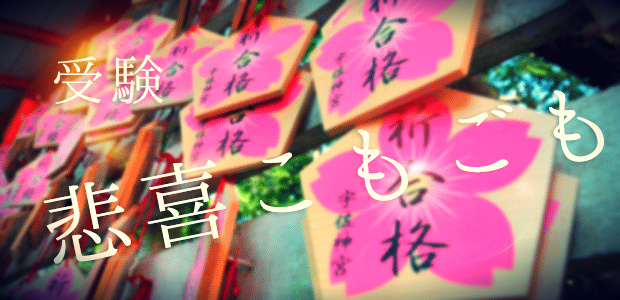

3月になりました。大学入試の世界では、先週の25日に国立大学の前期入試が行われました。まだ後期試験は残っていますが、ほとんどの生徒は25日で受験が終わります。昨年の夏以降、夜遅くまで残って勉強していた生徒達も、受験終了とともに一人減り、二人減り、25日を境に誰もいなくなります。高1、高2の授業を終えて教務室で一息ついたとき、何とも言えずセンチメンタルな気分になりますね。生徒達の成長の思い出が頭の中をよぎり、不覚にも目頭が熱くなることも…。これは受験学年を担当したことがある先生であれば、誰しも思い当たるところでしょう。
受かる生徒、落ちる生徒
さて、今回は、受験終了を記念して（？）、受かる生徒・落ちる生徒について話してみたいと思います。長い間入試を担当していると、受かる生徒と落ちる生徒には、それぞれ共通する性質のようなものがあるように感じます。1年生、2年生の頃同じくらいの成績だった二人が、3年の受験ではくっきりと結果に明暗が分かれることも珍しくありません。では、その違いはどこから来るのでしょうか。
大学入試は「大人の入試」です。塾も学校もただのアドバイザーに過ぎず、主体は明確に生徒にあります。わたしたち講師は「こうした方がよいよ」とアドバイスすることはできますが、それを強制することはできません。本人がアドバイスを受け入れるかどうかは本人の自由なのです。
しかし、この「主体は生徒」という言葉は一見当たり前のようでいて、実はそれを心の底から受け入れるのが難しいものでもあります。生徒達は小学校、中学校と先生を「仰ぎ見て」きました。先生の言ったとおりにしていれば、少なくとも「悪いことにはならない」。そう体にすり込まれてきています。言ったとおりにやらない場合にも「言われたとおりにやるほうが”よい”」と考えています。ですから、生徒達は言われたとおりにやらない場合、「やったふり」をしてごまかすことになります。この呪縛は、我々大人が思うよりも強固なものです。大学入試の場合、この呪縛がよい方向に作用することはほとんどありません。自分で勉強の道筋を考えず、指示を求めるのみになった場合、最終的には破綻します。大学入試ではやるべきことが多すぎて、講師は細かいところまで指示を出すことができません。ですから、指示を待つだけだと、必然的に抜けが目立つようになります。そして、この「抜け」の多さが不合格に帰結してしまうのです。
定期テストで必ずよい点を取り、常に学校で10位以内に入っている、絵に描いたような優等生が入試で苦戦する理由はそこにあります。一方で、1，2年のうちは無軌道で好き勝手にやっていた生徒が全勝することもよくあります。
学校の先生、塾の講師の指示は、基本的には有用なものばかりです。しかし、それを何も考えずに受け入れる、あるいは条件反射的に反発するのは危険です。その指示は自分にとって必要なのか、自分の目的と合致しているかを考えるくせをつけてほしいと思います。そう考えるなかで、徐々に自分の「目的」が明確化し、課題が見えてきます。大学入試では「勉強法」が重要であるとよく言われますが、細かい教科の勉強法よりも重要なのは、この姿勢なのです。現在高1、高2のみなさんは是非意識してみてくださいね。